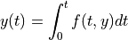

Simulation and Integration
Preliminaries
At the highest level, RoadRunner generates and solves ODE (ordinary differential equation) problem of the form

where the function :math: f(t) is generated from the SBML document.
As this is numerically integrated, it is impossible to specify a time step and other integration parameters that are ideal for all functions. As a general rule for numeric stability, if you have a periodic function, you need a time step that is approximately 1/12 the period.
There are a number of tuning parameters that allows one to fine tune the numeric integration to their function at hand. We have chosen a set of precision values that we feel are a good balance between performance and numeric stability for most systems. However, one may frequently encounter stiffer systems which require tighter tolerances . Note that specifying very tight tolerances will drastically decrease performance.
Another parameter which is a significant role in numeric stability and performance is the initial time step. If no initial time step is provided (initial time step < 0, the default value), the internal integrator (defaults to CVODE) will estimate an initial time step based on total time span and and other numeric attributes calculated from the system. If the estimated initial time step is too large, then a significant amount of time will be spent by the integrator adjusting it down to a stable value. If the initial time step is too small, the integrator will waste needless steps re-evaluating the system function. As we use variable time step integrators, the time step will increase if the function is relatively smooth, however, by the time the time step has been increased, the simulation time may be over.
If one encounters exceptions from the integrator, the first thing that one should try is specifying an initial time step and tighter absolute and relative tolerances.
All of the parameters to tune the integration are specified on the integrator object:
>>> rr=roadrunner.RoadRunner("mymodel.xml")
Now specify absolute and relative tolerances
>>> rr.integrator.absolute_tolerance = 5e-10
>>> rr.integrator.relative_tolerance = 1e-3
and specify initial time step.
>>> rr.integrator.initial_time_step = 0.00001
>>> rr.simulate(0, 10)
This will specify the absolute and relative tolerances and initial time step, and will integrate the system from time 0 to 10. The internal integrator will take many time steps before it reaches time 10.